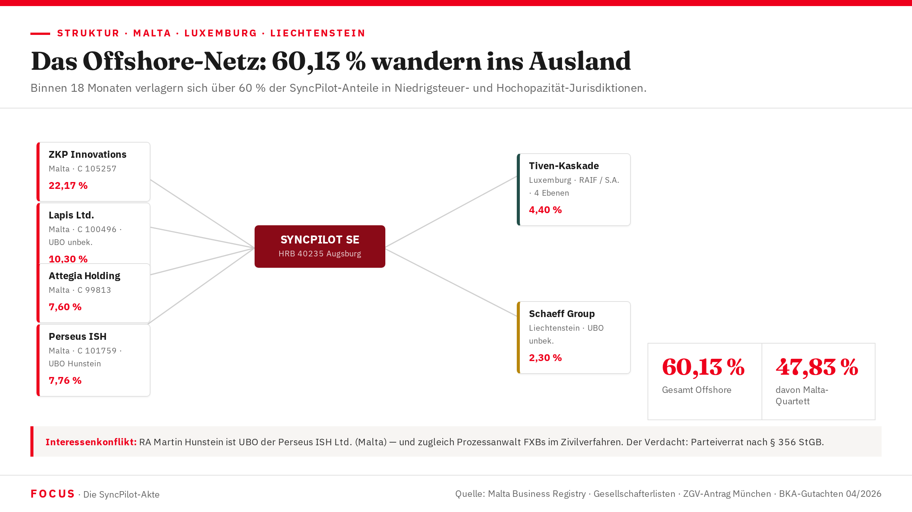

Das Offshore-Netz: Malta, Tiven, Luxemburg
60,13 % der SyncPilot-Aktien liegen heute in Jurisdiktionen, deren Transparenzstandards das deutsche Handelsregister nicht erreicht. Vier maltesische Holdings, eine Luxemburger RAIF-Kaskade — und ein Rechtsanwalt mit zwei Hüten.

Die EU-Jurisdiktion mit praktischer Opazität
Malta ist EU-Mitglied, unterliegt europäischen Transparenzrichtlinien — und bietet trotzdem eine in der Praxis nur schwer durchdringbare Gesellschaftsstruktur. Nominee-Direktoren, Company Service Provider als Intermediäre, ein Beneficial-Ownership-Register, das nur eingeschränkt öffentlich zugänglich ist: Das sind die Bedingungen, unter denen das Malta-Quartett operiert.
Der Ermittlungsdruck auf Malta-Konstrukte ist real, aber langsam. Europäische Rechtshilfeanträge dauern. Register-Auszüge erfordern formale Verfahren. Genug Zeit, um Spuren zu verschleieren, ehe deutsche Staatsanwälte überhaupt an die Türen klopfen.
Die Registrierungssequenz der vier Malta-Gesellschaften verrät ihr Entstehungsdatum: C 99813 < C 100496 < C 101759 < C 105257. Sie wurden im Herbst 2022 registriert — ein halbes Jahr vor der Massenkapitalerhöhung März 2023, bei der alle vier gleichzeitig als neue SyncPilot-Gesellschafter auftraten. Fakt — Malta Business Registry
Die Planung begann früher, als die Eintragungen zeigen. Forensische Schätzung: Herbst 2020, unmittelbar nach dem Ausscheiden von Co-Geschäftsführer Martin Oberhofer und damit nach dem Beginn der Alleinherrschaft von Franz Xaver Bleicher. Hypothese — Konfidenz 65 %
„Cap Table deutsch halten." Diethard Goerg, per E-Mail — sinngemäß nach vorliegenden Informationen. Zitat: Forensisches Gutachten Sonntag & Partner April 2026 · FOCUS-Rekonstruktion
Vier Holdings — ein Konstruktionsprinzip
Alle vier maltesischen Gesellschaften wurden im Herbst 2022 registriert, bevor sie im März 2023 gleichzeitig in der SyncPilot-Gesellschafterliste auftauchten. Die Registrierungsreihenfolge belegt das koordinierte Vorgehen: Zuerst die Hülle — dann die Aktion.
| Name | Reg.-Nr. | SyncPilot-Anteil | Rolle / Funktion | UBO / Verbindung | Risiko-Stufe |
|---|---|---|---|---|---|
| ZKP Innovations Holding Ltd. | C 105257 | 22,17 % | Größter Einzelgesellschafter nach Offshore-KE März 2023 | 5+ Gesellschafter via Malta-SPV-Konsortium — nicht vollständig identifiziert | KRITISCH |
| Lapis Ltd. | C 100496 | 10,30 % | Zweitgrößte Malta-Holding; maximale Opazität | Vollständig unbekannt — kein UBO identifiziert | KRITISCH |
| Perseus Innovations & Services Holding Ltd. | C 101759 | 7,76 % | Ex-Perseus GmbH StbG (DE) → Jurisdiktionswechsel nach Malta 2023; Emissionspreis 1,00 €/Aktie statt Marktwert 18,96 € | RA Martin Hunstein + Diethard Goerg | KRITISCH — § 356 StGB |
| Attegia Holding Ltd. | C 99813 | 7,60 % | Älteste Registrierungsnummer des Quartetts; UBO unbekannt | Unbekannt | HOCH |
Die Registrierungsnummern der vier Malta-Gesellschaften folgen aufsteigend: C 99813 (Attegia) < C 100496 (Lapis) < C 101759 (Perseus) < C 105257 (ZKP). Kleinere Nummern bedeuten frühere Registrierung. Alle vier wurden im Herbst 2022 registriert — koordiniert, bevor sie im März 2023 gleichzeitig in die SyncPilot-Gesellschafterliste eintraten. Fakt — MBR; Registrierungssequenz K-20–K-24
Der Mann mit zwei Hüten: RA Martin Hunstein
Martin Hunstein ist Rechtsanwalt. Er vertritt Franz Xaver Bleicher im laufenden Verfahren vor dem Landgericht Augsburg — Az. 112 O 2848/25, in dem LVS Hotel & Resorts (€pe) S.A. auf Rückzahlung von 6,15 Mio. € klagte und Recht bekam.
Gleichzeitig ist Hunstein wirtschaftlich Berechtigter der Perseus Innovations & Services Holding Ltd. (Malta C 101759) — einer Gesellschaft, die 7,76 % der SyncPilot-Aktien hält. Diese Aktien erhielt Perseus im März 2023 zu einem Emissionspreis von 1,00 €/Stück, obwohl der Marktwert zum selben Zeitpunkt 18,96 €/Stück betrug. Der verdeckte Vermögenstransfer an Perseus/Hunstein: 2.296.615 €. Fakt
§ 356 StGB (Parteiverrat) ist ein Offizialdelikt. Er erfasst den Rechtsanwalt, der in derselben Rechtssache beiden Parteien durch Rat oder Beistand pflichtwidrig dient. Hunsteins Dreifach-Rolle — als Prozessanwalt FXBs, als Gesellschafter Perseus, und möglicherweise als Berater bei der Malta-Strukturierung — ist forensisch die brisanteste Personenkonstellation des Falls. Hypothese — vollständiges UBO-Mapping Perseus
Hut 1 — Prozessanwalt: Vertritt FXB/SyncPilot im LG-Augsburg-Verfahren gegen LVS/Damerau. Mandatspflicht: bestmögliche Interessenvertretung des Mandanten.
Hut 2 — Gesellschafter Perseus: Hält 7,76 % der SyncPilot-Aktien via Perseus ISH (Malta C 101759). Eigeninteresse: kein Rückabwicklungsurteil, hohe Bewertung, Fortbestand der Offshore-Struktur.
Hut 3 — Möglicher Strukturberater: Hat Kenntnis der Offshore-Architektur, möglicherweise aktiv an deren Gestaltung beteiligt. Hypothese
Forensische Bewertung: Alle drei Rollen gleichzeitig = § 356 StGB Parteiverrat. Zusätzlich: § 27 StGB i.V.m. § 266 StGB (Beihilfe zur Untreue) und § 370 AO (Steuerhinterziehung) als mögliche Tatbestände. Fakt — Anwaltsstellung + Gesellschafterstellung dokumentiert
1,00 € gegen 18,96 € — der verdeckte Transfer
| Preisebene | Preis/Aktie | Wert 127.885 Aktien | Status |
|---|---|---|---|
| Tatsächlich gezahlter Emissionspreis | 1,00 € | 127.885 € | Fakt — Buchhaltung K-19 |
| Implizierter Marktwert (Parallelemissionen) | 18,96 € | 2.424.500 € | Fakt — BKA-Gutachten |
| Nächste Emission Mai 2023 | 20,56 € | 2.630.895 € | Fakt — Gesellschafterliste |
| Verdeckter Vermögenstransfer | 17,96 € Rabatt | 2.296.615 € | Fakt — § 266 StGB |
FXBs Prozessanwalt Dr. Tobias Tomanke behauptete im LG-Augsburg-Verfahren, Perseus habe 13 €/Aktie gezahlt — nicht 1,00 €. Das Replik-Schriftsatz von Sonntag & Partner widerlegte alle 15 Einreden urkundlich. Der Widerspruch zwischen der Buchhaltung (1,00 €) und der Gerichtsbehauptung (13,00 €) ist unauflösbar: Entweder ist die Buchhaltung falsch (§ 267, 283b StGB), oder die Aussage vor Gericht ist falsch. Fakt — Klageerwiderung K-30; Replik K-32
Vier Ebenen für 4,40 Prozent
Der Tiven-Komplex ist die komplexeste Einzelstruktur im gesamten SyncPilot-Cap-Table. Eine natürliche Person — Purkert — hält 4,40 % der SyncPilot-Aktien. Aber nicht direkt. Sondern über eine vierstufige Kaskade quer durch drei Jurisdiktionen.
Für einen 4,40-Prozent-Minderheitsanteil an einer nicht börsennotierten deutschen GmbH/SE ist eine vierstufige Kaskade über drei Jurisdiktionen wirtschaftlich nicht sinnvoll. Die jährlichen Verwaltungskosten (AIFM-Gebühren, Luxemburger Compliance, CSP Malta, steuerliche Berichterstattung in drei Ländern) übersteigen den erwarteten Return erheblich — es sei denn, der Zweck der Konstruktion ist nicht die Investition, sondern die Verschleierung des Eigentümers.
Das BKA-Gutachten bewertet diese Struktur als roten BKA-Flag-Indikator für Geldwäsche nach § 261 StGB. Fakt — BKA-Gutachten V.4
Malta: ZKP + Lapis + Perseus ISH + Attegia = 47,83 %
Luxemburg: Tiven = 4,40 %
Liechtenstein: Schaeff Group = 2,30 %
Schweiz: AURIGA Capital AG = 7,24 % (Grenzfall; nicht klassisches Offshore, aber außerhalb EU-Transparenzregime)
Gesamt Offshore-Anteil: 60,13 % Fakt
Europäische Einziehungsanordnungen
Mit dem Vorbehaltsurteil des LG Augsburg vom 13. Mai 2026 (Az. 112 O 2848/25) sind die nächsten Vollstreckungsschritte möglich. Die Klageseite plant europäische Einziehungsanordnungen gegen alle identifizierten Offshore-Strukturen. Rechtsgrundlage: Verordnung (EU) 2018/1805 über die gegenseitige Anerkennung von Sicherstellungs- und Einziehungsanordnungen.
Geschätztes Arrest-Volumen: 22,27 Mio. € — falls die Anordnungen gegen ZKP, Lapis, Attegia, Perseus ISH, Tiven S.A./SICAV RAIF und Schaeff Group vollständig vollstreckt werden. Hypothese — Status der Anordnungen
| Ziel | Jurisdiktion | Geschätzter Wert |
|---|---|---|
| ZKP Innovations Holding Ltd. | Malta | ~11,0 Mio. € |
| Lapis Ltd. | Malta | ~4,5 Mio. € |
| Attegia Holding Ltd. | Malta | ~4,2 Mio. € |
| Perseus ISH Ltd. | Malta | ~1,8 Mio. € |
| Tiven S.A. / SICAV RAIF | Luxemburg | ~0,5 Mio. € |
| Schaeff Group Holding AG | Liechtenstein | ~0,3 Mio. € |
Was die Offshore-Struktur strafrechtlich bedeutet
Die Verschleierung der Herkunft von Vermögenswerten aus Vortaten (§§ 263, 266 StGB) durch Transfer in Offshore-Strukturen (Malta/Luxemburg/Liechtenstein) erfüllt den Tatbestand der Geldwäsche.
RA Hunstein als Prozessanwalt FXBs und gleichzeitiger Gesellschafter Perseus ISH (7,76 % SyncPilot): In derselben Rechtssache beiden Parteien dienend. Offizialdelikt. Verfolgung von Amts wegen.
Perseus erhält Aktien zu 1,00 € statt 18,96 €. Die Differenz von 17,96 €/Aktie ist ein nicht deklarierter geldwerter Vorteil. Goldfinger-Modell: maltesische Steuergestaltung mit deutschen Quellen. Verjährungsfrist: 10 Jahre.